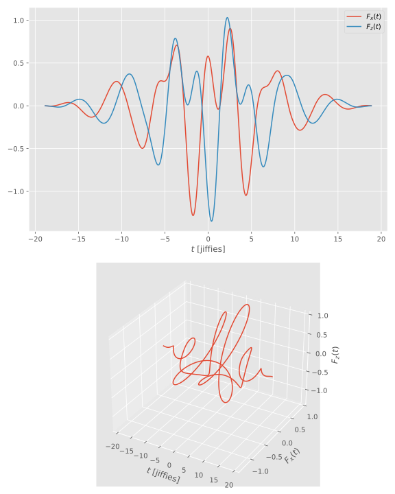

ElectricFields.jl
The idea of this package is to provide an interface between the reality and calculations. In the calculations, it is useful to represent fields in terms of cycles of a fundamental frequency, which yields a timebase. E.g. one might use laser pulses of 800 nm, in an experiment, which has a period time of about 2.66 fs. It is, however, easier to calculate in normalized time, and relate all other quantities of interest (such as ionization potential, &c) to this time scale.
The package provides a simple DSL that requires just a handful of parameters, that can be given in any unit system (thanks to Unitful.jl). Different fields can be combined in any way that is physically reasonable, to recreate complicated experimental situations. Everything can then be converted to normalized time, for use in calculations.
Scope
At the moment, only electric fields that are the solution of the Helmholtz equation, i.e. those that are separable in the time and space coordinates, are supported. Further more, the spatial dependence is neglected entirely (long wavelength approximation), and only the temporal behaviour is modelled. This appropriate when studying systems which are smaller than the fundamental wavelength of the field, such as atoms in a laser field. It may be problematic for larger molecules, which can be sensitive to the spatial variation of the field.
The temporal structure of the field is modelled as
\[\vec{A}(t) = A_0 f(t) \Im\{\vec{J} \exp[\im(\omega t + \phi)]\},\]
where $A_0$ is the peak vector potential, $f(t)$ is the envelope (which does not have to be slowly varying in time, i.e. can be ultrashort), $\vec{J}$ is the Jones vector, and $\exp[\im(\omega t + \phi)]$ is the carrier. At present only linear polarization, or polarization transverse to the direction of propagation is supported, i.e. no longitudinal polarization is implemented.
The electric field amplitude is computed as
\[\vec{F}(t) \defd -\partial_t \vec{A}(t)\]
via automatic differentiation (ForwardDiff.jl).
Presently, only the temporal picture is well supported in ElectricFields.jl, since the main usage (for now) is to provide input to time-propagation of the time-dependent Schrödinger equation. The equivalent spectral picture, related to the temporal one via the Fourier transform, will receive better support in a future release.
Examples
The simplest pulse is created thus:
julia> using ElectricFields, Unitful
julia> @field(IR) do
I₀ = 1e14u"W/cm^2"
λ = 800.0u"nm"
τ = 6.2u"fs"
σmax = 6.0
end
Linearly polarized field with
- I₀ = 2.8495e-03 au = 1.0e14 W cm⁻² =>
- E₀ = 5.3380e-02 au = 27.4492 GV m⁻¹
- A₀ = 0.9372 au
– a Fixed carrier @ λ = 800.0000 nm (T = 2.6685 fs, ω = 0.0570 Ha = 1.5498 eV)
– and a Gaussian envelope of duration 6.2000 fs (intensity FWHM; ±6.08σ)
– Uₚ = 0.2196 Ha = 5.9759 eV => α = 16.4562 Bohr = 870.8242 pm
julia> vector_potential(IR, 4.0)
0.2116055371709056
julia> field_amplitude(IR, 4.0), field_envelope(IR, 4.0)
(-0.05194633272360931, 0.05336201848846937)
julia> instantaneous_intensity(IR, 4.0), intensity(IR, 4.0)
(0.0026984214834319233, 0.002847505017163747)
julia> span(IR)
-661.9198939608041..661.9198939608041
julia> timeaxis(IR)
-661.9198939608041:1.1041199232040102:661.9198939608041If we give no units, Hartree atomic units are assumed:
julia> @field(XUV) do
I₀ = 0.04
ω = 1.0
τ = 150.0
σmax = 4
end
Linearly polarized field with
- I₀ = 4.0000e-02 au = 1.40377808e15 W cm⁻² =>
- E₀ = 2.0000e-01 au = 102.8441 GV m⁻¹
- A₀ = 0.2000 au
– a Fixed carrier @ λ = 45.5634 nm (T = 151.9830 as, ω = 1.0000 Ha = 27.2114 eV)
– and a Gaussian envelope of duration 3.6283 fs (intensity FWHM; ±4.04σ)
– Uₚ = 0.0100 Ha = 272.1138 meV => α = 0.2000 Bohr = 10.5835 pmOther Envelopes and polarizations, as well as some simple arithmetic is possible:
julia> @field(A) do
I₀ = 1.0
ω = 1.0
cycles = 6.0
env = :cos²
ξ = 1.0
end
Transversely polarized field with
- I₀ = 1.0000e+00 au = 3.5094452e16 W cm⁻² =>
- E₀ = 1.0000e+00 au = 514.2207 GV m⁻¹
- A₀ = 1.0000 au
– a Elliptical carrier with ξ = 1.00 (RCP) @ λ = 45.5634 nm (T = 151.9830 as, ω = 1.0000 Ha = 27.2114 eV)
– and a 6.00 cycles cos² envelope
– Uₚ = 0.2500 Ha = 6.8028 eV => α = 1.0000 Bohr = 52.9177 pm
julia> @field(B) do
I₀ = 1.0
ω = 2.0
cycles = 6.0
env = :cos²
ξ = -1.0
end
Transversely polarized field with
- I₀ = 1.0000e+00 au = 3.5094452e16 W cm⁻² =>
- E₀ = 1.0000e+00 au = 514.2207 GV m⁻¹
- A₀ = 0.5000 au
– a Elliptical carrier with ξ = -1.00 (LCP) @ λ = 22.7817 nm (T = 75.9915 as, ω = 2.0000 Ha = 54.4228 eV)
– and a 6.00 cycles cos² envelope
– Uₚ = 0.0625 Ha = 1.7007 eV => α = 0.2500 Bohr = 13.2294 pm
julia> F = A + delay(B, 3/2π)
┌ Transversely polarized field with
│ - I₀ = 1.0000e+00 au = 3.5094452e16 W cm⁻² =>
│ - E₀ = 1.0000e+00 au = 514.2207 GV m⁻¹
│ - A₀ = 1.0000 au
│ – a Elliptical carrier with ξ = 1.00 (RCP) @ λ = 45.5634 nm (T = 151.9830 as, ω = 1.0000 Ha = 27.2114 eV)
│ – and a 6.00 cycles cos² envelope
│ – Uₚ = 0.2500 Ha = 6.8028 eV => α = 1.0000 Bohr = 52.9177 pm
⊕
│ Transversely polarized field with
│ - I₀ = 1.0000e+00 au = 3.5094452e16 W cm⁻² =>
│ - E₀ = 1.0000e+00 au = 514.2207 GV m⁻¹
│ - A₀ = 0.5000 au
│ – a Elliptical carrier with ξ = -1.00 (LCP) @ λ = 22.7817 nm (T = 75.9915 as, ω = 2.0000 Ha = 54.4228 eV)
│ – and a 6.00 cycles cos² envelope
│ – Uₚ = 0.0625 Ha = 1.7007 eV => α = 0.2500 Bohr = 13.2294 pm
└ – delayed by 0.4775 jiffies = 11.5493 as
julia> field_amplitude(F, 4.0)
3-element StaticArrays.SVector{3, Float64} with indices SOneTo(3):
-0.8793235934912678
-0.0
0.06802883592577502
Reference
ElectricFields.AbstractCarrierElectricFields.ConstantFieldElectricFields.Cos²EnvelopeElectricFields.DelayedFieldElectricFields.EllipticalCarrierElectricFields.FixedCarrierElectricFields.GaussianEnvelopeElectricFields.LinearCarrierElectricFields.LinearFieldElectricFields.LinearTransverseCarrierElectricFields.NegatedFieldElectricFields.PaddedFieldElectricFields.RampElectricFields.SumFieldElectricFields.TransverseCarrierElectricFields.TransverseFieldElectricFields.TrapezoidalEnvelopeElectricFields.TruncatedGaussianEnvelopeElectricFields.WindowedFieldElectricFields.WrappedFieldElectricFields.amplitudeElectricFields.calc_params!ElectricFields.carrierElectricFields.continuityElectricFields.continuityElectricFields.dimensionsElectricFields.envelopeElectricFields.field_amplitudeElectricFields.field_amplitudeElectricFields.field_envelopeElectricFields.fluenceElectricFields.fluenceElectricFields.free_oscillation_amplitudeElectricFields.free_oscillation_amplitudeElectricFields.frequencyElectricFields.frequencyElectricFields.gaussian_common!ElectricFields.instantaneous_intensityElectricFields.intensityElectricFields.intensityElectricFields.keldyshElectricFields.keldyshElectricFields.max_frequencyElectricFields.max_frequencyElectricFields.periodElectricFields.periodElectricFields.phaseElectricFields.phase_shiftElectricFields.photon_energyElectricFields.photon_energyElectricFields.polarizationElectricFields.ponderomotive_potentialElectricFields.ponderomotive_potentialElectricFields.spanElectricFields.spectrumElectricFields.stepsElectricFields.test_field_parametersElectricFields.timeaxisElectricFields.timeaxisElectricFields.vector_potentialElectricFields.wavelengthElectricFields.wavelengthElectricFields.wavenumberElectricFields.wavenumberIntervalSets.durationIntervalSets.durationElectricFields.@fieldElectricFields.@namespace!